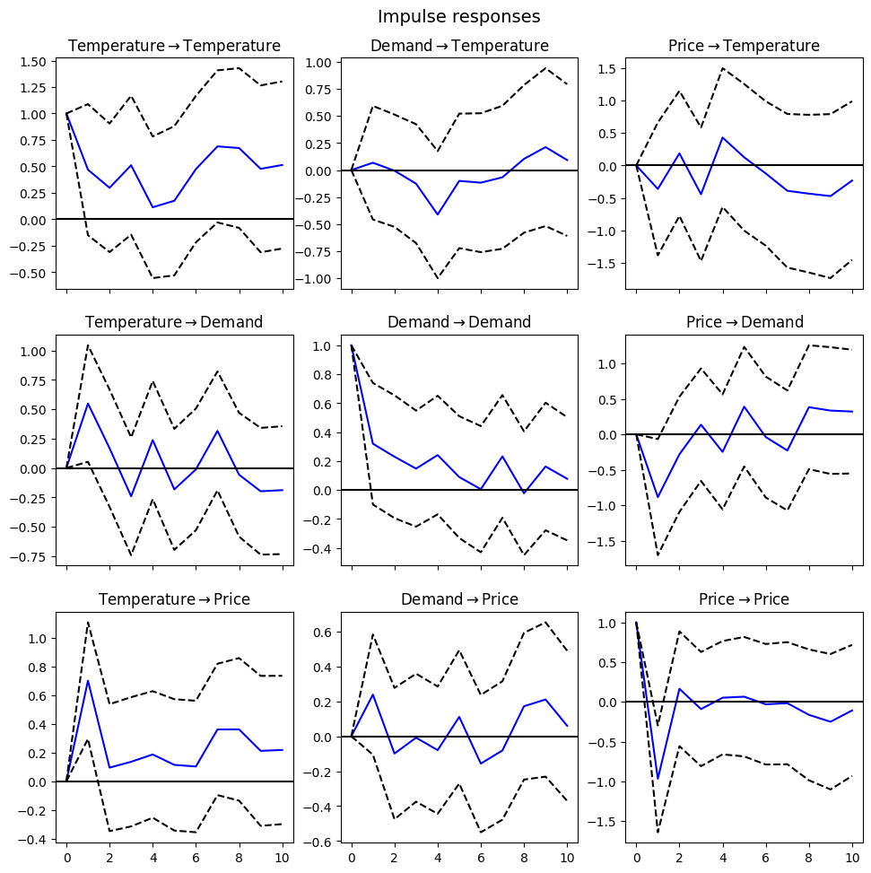

12. Impulse Response Functions (IRF)#
import numpy as np
import pandas as pd
import matplotlib.pyplot as plt
# Simulate data
np.random.seed(0)
n_samples = 100
time_index = pd.date_range(start='1/1/2020', periods=n_samples, freq='D')
temperature = np.sin(np.linspace(0, 3 * np.pi, n_samples)) + np.random.normal(0, 0.5, n_samples)
demand = np.sin(np.linspace(0, 2 * np.pi, n_samples) + np.pi/4) + np.random.normal(0, 0.5, n_samples)
price = 0.5 * temperature + 0.3 * demand + np.random.normal(0, 0.2, n_samples)
# Create a DataFrame
data = pd.DataFrame({'Temperature': temperature, 'Demand': demand, 'Price': price}, index=time_index)
# Display the first few rows
data.head()
| Temperature | Demand | Price | |
|---|---|---|---|
| 2020-01-01 | 0.882026 | 1.648682 | 0.861781 |
| 2020-01-02 | 0.295135 | 0.076651 | 0.122687 |
| 2020-01-03 | 0.678620 | 0.155690 | 0.605949 |
| 2020-01-04 | 1.402179 | 1.312848 | 1.225997 |
| 2020-01-05 | 1.305441 | 0.275470 | 0.863388 |
from statsmodels.tsa.api import VAR
# Fit a VAR model
model = VAR(data)
results = model.fit(maxlags=15, ic='aic')
# Print summary of the model
print(results.summary())
Summary of Regression Results
==================================
Model: VAR
Method: OLS
Date: Tue, 21, May, 2024
Time: 17:29:42
--------------------------------------------------------------------
No. of Equations: 3.00000 BIC: -1.37999
Nobs: 85.0000 HQIC: -3.75059
Log likelihood: 3.36325 FPE: 0.00702795
AIC: -5.34571 Det(Omega_mle): 0.00191987
--------------------------------------------------------------------
Results for equation Temperature
==================================================================================
coefficient std. error t-stat prob
----------------------------------------------------------------------------------
const -0.057815 0.098729 -0.586 0.558
L1.Temperature 0.468560 0.316156 1.482 0.138
L1.Demand 0.067502 0.267757 0.252 0.801
L1.Price -0.362271 0.521974 -0.694 0.488
L2.Temperature 0.294967 0.327382 0.901 0.368
L2.Demand 0.026953 0.253960 0.106 0.915
L2.Price 0.064100 0.522505 0.123 0.902
L3.Temperature 0.196301 0.323544 0.607 0.544
L3.Demand -0.218187 0.238278 -0.916 0.360
L3.Price -0.259153 0.515396 -0.503 0.615
L4.Temperature 0.050554 0.310760 0.163 0.871
L4.Demand -0.244907 0.234632 -1.044 0.297
L4.Price 0.164399 0.488749 0.336 0.737
L5.Temperature 0.018902 0.302076 0.063 0.950
L5.Demand 0.142273 0.236701 0.601 0.548
L5.Price -0.002360 0.483432 -0.005 0.996
L6.Temperature 0.201760 0.302361 0.667 0.505
L6.Demand 0.165799 0.233379 0.710 0.477
L6.Price -0.190319 0.476666 -0.399 0.690
L7.Temperature 0.340581 0.308330 1.105 0.269
L7.Demand 0.053516 0.227168 0.236 0.814
L7.Price -0.373615 0.480085 -0.778 0.436
L8.Temperature 0.319700 0.302152 1.058 0.290
L8.Demand 0.269634 0.242211 1.113 0.266
L8.Price -0.377653 0.490622 -0.770 0.441
L9.Temperature -0.260301 0.311380 -0.836 0.403
L9.Demand 0.146511 0.256165 0.572 0.567
L9.Price -0.064729 0.509669 -0.127 0.899
L10.Temperature 0.010979 0.324817 0.034 0.973
L10.Demand 0.031484 0.233151 0.135 0.893
L10.Price 0.097454 0.519974 0.187 0.851
L11.Temperature -0.119150 0.325559 -0.366 0.714
L11.Demand 0.048014 0.226761 0.212 0.832
L11.Price 0.132873 0.532407 0.250 0.803
L12.Temperature -0.290585 0.312931 -0.929 0.353
L12.Demand -0.377471 0.212897 -1.773 0.076
L12.Price 0.773514 0.519685 1.488 0.137
L13.Temperature 0.191093 0.327472 0.584 0.560
L13.Demand 0.231930 0.224091 1.035 0.301
L13.Price -0.160423 0.534395 -0.300 0.764
L14.Temperature -0.122401 0.335129 -0.365 0.715
L14.Demand -0.028344 0.218464 -0.130 0.897
L14.Price -0.075885 0.544187 -0.139 0.889
L15.Temperature 0.166649 0.318139 0.524 0.600
L15.Demand -0.246642 0.200888 -1.228 0.220
L15.Price -0.327654 0.508598 -0.644 0.519
==================================================================================
Results for equation Demand
==================================================================================
coefficient std. error t-stat prob
----------------------------------------------------------------------------------
const -0.063319 0.079019 -0.801 0.423
L1.Temperature 0.548795 0.253040 2.169 0.030
L1.Demand 0.319390 0.214304 1.490 0.136
L1.Price -0.886561 0.417771 -2.122 0.034
L2.Temperature 0.358407 0.262026 1.368 0.171
L2.Demand 0.302423 0.203261 1.488 0.137
L2.Price -0.658486 0.418196 -1.575 0.115
L3.Temperature -0.245470 0.258954 -0.948 0.343
L3.Demand 0.026348 0.190710 0.138 0.890
L3.Price 0.030623 0.412505 0.074 0.941
L4.Temperature 0.138481 0.248722 0.557 0.578
L4.Demand 0.124512 0.187791 0.663 0.507
L4.Price -0.036590 0.391178 -0.094 0.925
L5.Temperature -0.216845 0.241772 -0.897 0.370
L5.Demand 0.117637 0.189447 0.621 0.535
L5.Price 0.511157 0.386923 1.321 0.186
L6.Temperature -0.191015 0.242000 -0.789 0.430
L6.Demand -0.057997 0.186788 -0.310 0.756
L6.Price 0.207921 0.381507 0.545 0.586
L7.Temperature 0.169900 0.246777 0.688 0.491
L7.Demand 0.135811 0.181818 0.747 0.455
L7.Price -0.072445 0.384244 -0.189 0.850
L8.Temperature -0.295132 0.241833 -1.220 0.222
L8.Demand -0.246829 0.193858 -1.273 0.203
L8.Price 0.713658 0.392677 1.817 0.069
L9.Temperature -0.554103 0.249218 -2.223 0.026
L9.Demand -0.051071 0.205026 -0.249 0.803
L9.Price 0.833972 0.407922 2.044 0.041
L10.Temperature -0.378162 0.259973 -1.455 0.146
L10.Demand 0.012735 0.186607 0.068 0.946
L10.Price 0.599737 0.416169 1.441 0.150
L11.Temperature -0.003721 0.260566 -0.014 0.989
L11.Demand 0.084759 0.181492 0.467 0.640
L11.Price -0.091403 0.426121 -0.215 0.830
L12.Temperature 0.108975 0.250460 0.435 0.663
L12.Demand -0.017654 0.170396 -0.104 0.917
L12.Price -0.089249 0.415938 -0.215 0.830
L13.Temperature 0.515138 0.262098 1.965 0.049
L13.Demand -0.156395 0.179355 -0.872 0.383
L13.Price -0.548346 0.427712 -1.282 0.200
L14.Temperature 0.203130 0.268226 0.757 0.449
L14.Demand 0.087356 0.174852 0.500 0.617
L14.Price -0.267569 0.435549 -0.614 0.539
L15.Temperature -0.369529 0.254628 -1.451 0.147
L15.Demand -0.426175 0.160784 -2.651 0.008
L15.Price 0.739362 0.407065 1.816 0.069
==================================================================================
Results for equation Price
==================================================================================
coefficient std. error t-stat prob
----------------------------------------------------------------------------------
const -0.100308 0.064803 -1.548 0.122
L1.Temperature 0.701830 0.207517 3.382 0.001
L1.Demand 0.238981 0.175750 1.360 0.174
L1.Price -0.967770 0.342612 -2.825 0.005
L2.Temperature 0.314005 0.214886 1.461 0.144
L2.Demand 0.008567 0.166694 0.051 0.959
L2.Price -0.305720 0.342961 -0.891 0.373
L3.Temperature 0.041192 0.212367 0.194 0.846
L3.Demand -0.105064 0.156400 -0.672 0.502
L3.Price -0.168246 0.338294 -0.497 0.619
L4.Temperature 0.107955 0.203976 0.529 0.597
L4.Demand 0.006849 0.154007 0.044 0.965
L4.Price -0.002545 0.320804 -0.008 0.994
L5.Temperature 0.010883 0.198276 0.055 0.956
L5.Demand 0.300338 0.155365 1.933 0.053
L5.Price 0.017800 0.317314 0.056 0.955
L6.Temperature -0.085266 0.198463 -0.430 0.667
L6.Demand 0.020607 0.153184 0.135 0.893
L6.Price 0.022773 0.312873 0.073 0.942
L7.Temperature 0.068468 0.202381 0.338 0.735
L7.Demand -0.118955 0.149108 -0.798 0.425
L7.Price 0.129572 0.315117 0.411 0.681
L8.Temperature 0.041222 0.198326 0.208 0.835
L8.Demand 0.105664 0.158982 0.665 0.506
L8.Price 0.210472 0.322033 0.654 0.513
L9.Temperature -0.294321 0.204383 -1.440 0.150
L9.Demand 0.168277 0.168141 1.001 0.317
L9.Price 0.181120 0.334535 0.541 0.588
L10.Temperature -0.111134 0.213203 -0.521 0.602
L10.Demand 0.004051 0.153035 0.026 0.979
L10.Price 0.173634 0.341299 0.509 0.611
L11.Temperature -0.048500 0.213689 -0.227 0.820
L11.Demand 0.040507 0.148841 0.272 0.786
L11.Price 0.131536 0.349460 0.376 0.707
L12.Temperature -0.009751 0.205401 -0.047 0.962
L12.Demand -0.145590 0.139741 -1.042 0.297
L12.Price 0.297709 0.341109 0.873 0.383
L13.Temperature 0.333180 0.214945 1.550 0.121
L13.Demand 0.125684 0.147088 0.854 0.393
L13.Price -0.450767 0.350765 -1.285 0.199
L14.Temperature 0.195191 0.219971 0.887 0.375
L14.Demand 0.005810 0.143395 0.041 0.968
L14.Price -0.456680 0.357192 -1.279 0.201
L15.Temperature 0.050658 0.208819 0.243 0.808
L15.Demand -0.352042 0.131859 -2.670 0.008
L15.Price -0.040429 0.333832 -0.121 0.904
==================================================================================
Correlation matrix of residuals
Temperature Demand Price
Temperature 1.000000 0.110009 0.802407
Demand 0.110009 1.000000 0.505391
Price 0.802407 0.505391 1.000000
# Compute IRFs
irf = results.irf(10) # Compute IRFs for 10 periods ahead
# Plot IRFs
irf.plot(orth=False)
plt.show()
